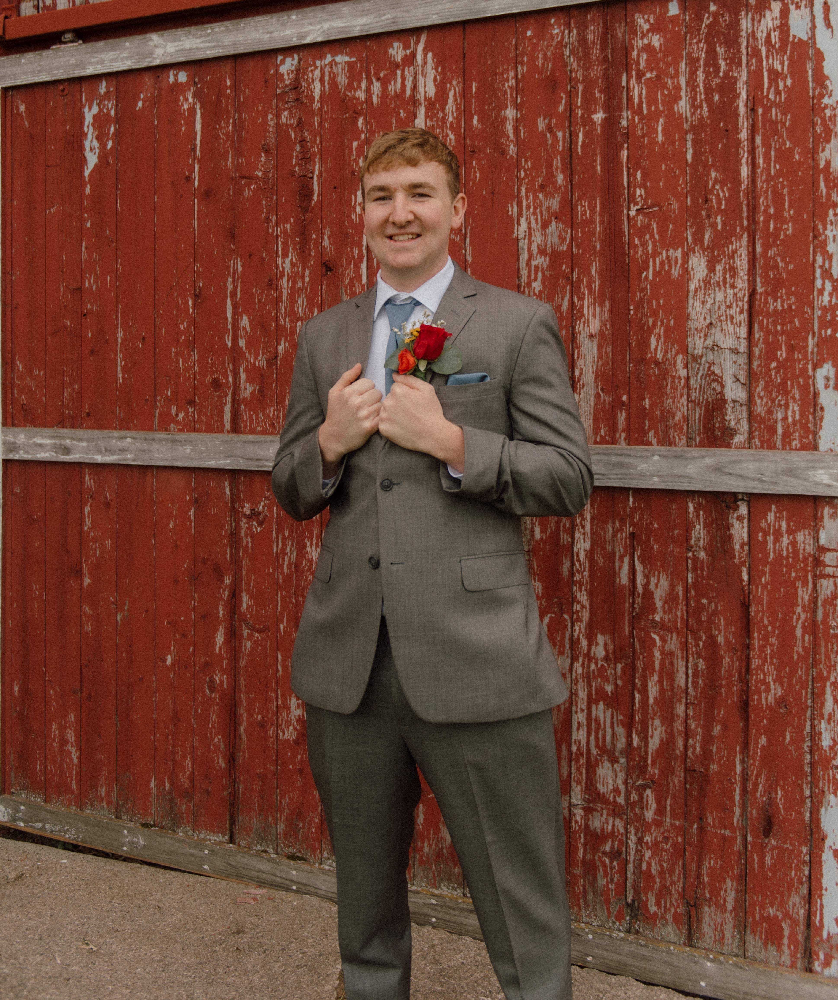

Hi, I'm Garrett, a front-end web developer passionate about building modern, user-friendly websites.

I'm a senior undergraduate student pursuing a Bachelor's degree and an aspiring front-end web developer with a passion for building responsive, user-friendly websites. I work primarily with HTML, CSS, and JavaScript, and I enjoy turning designs into clean, functional interfaces.
As I prepare to graduate, I'm seeking a front-end web developer role where I can apply my skills, learn from experienced professionals, and contribute to impactful projects.
Skills & Experience
- HTML
- CSS
- JavaScript
- Database Management (SQL)
- C#
- Adobe Illustrator
- Adobe Photoshop
- Microsoft Office
Passion
I'm passionate about front-end development because it combines creative design with logical problem-solving. I enjoy building responsive, user-friendly interfaces and focusing on the details that improve usability and accessibility.
My career goal is to begin as a front-end web developer after graduation, where I can apply my foundational skills while learning from experienced professionals. I'm eager to grow in a collaborative environment, contribute to meaningful projects, and continue developing into a skilled, dependable front-end developer.
Hobbies
Outside of coding, I'm passionate about fitness and endurance training. I enjoy weight lifting and running, and I also compete in triathlons. Training has taught me discipline, consistency, and the importance of long-term goals.
Fitness helps me stay focused and motivated, and I bring that same mindset into my approach to learning and building web projects.